Módulo 2: Administración de Servidores
Al finalizar vas a poder:
Hasta ahora entramos con usuario y contraseña. La contraseña viaja cifrada, pero se puede adivinar probando una y otra vez (Fuerza bruta).
La autenticación por clave ssh usa un par de archivos:
Lo que se firma con la privada lo comprueba la pública, y de la pública no se puede sacar la privada.
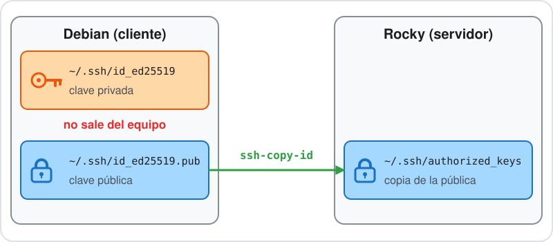
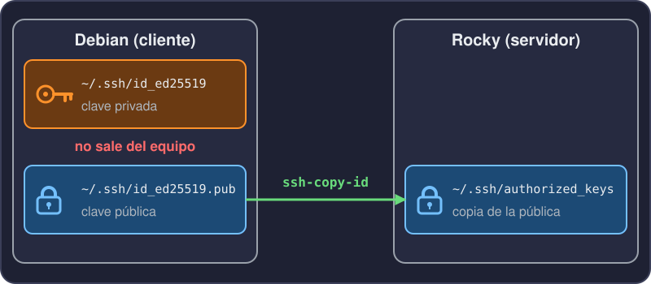
authorized_keys.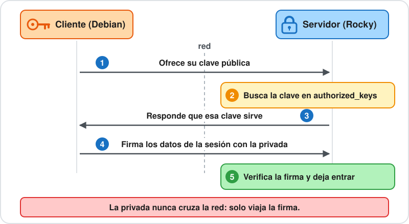
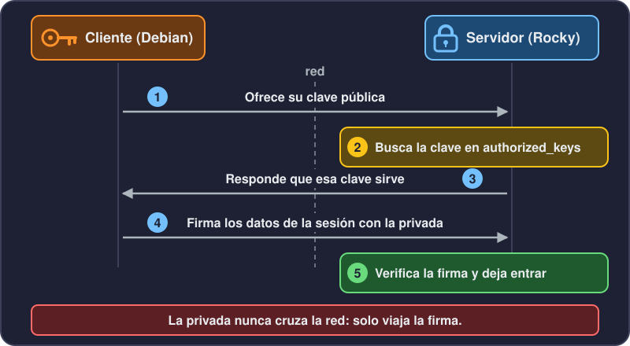
Failed password que vimos en la clase 14.Una clave privada sin passphrase, si te la roban, abre todos los servidores donde esté la pública. Por eso la protegemos.
$ ssh-keygen -t ed25519 -C "cristian@debian"
Generating public/private ed25519 key pair.
Enter file in which to save the key (/home/cristian/.ssh/id_ed25519):
Enter passphrase (empty for no passphrase):ssh-keygen crea el par. -t ed25519 elige el algoritmo y -C agrega un comentario al final de la pública.
ed25519 es el algoritmo actual: claves cortas y rápidas. RSA queda para sistemas viejos.$ ls -l ~/.ssh
-rw------- 1 cristian cristian 464 nov 3 19:08 curso18_ed25519
-rw-r--r-- 1 cristian cristian 97 nov 3 19:08 curso18_ed25519.pub
$ cat ~/.ssh/curso18_ed25519.pub
ssh-ed25519 AAAAC3NzaC1lZDI1NTE5AAAAINhq6AP//WijHhpqyQ2hCipBspIXTvcIZG4B4EI5DvAD cristian@debian
$ ssh-keygen -lf ~/.ssh/curso18_ed25519.pub
256 SHA256:OkGUNvDhfDpc7Wv2VqOLSM1app1aCL3NgN7HuBDOrfc cristian@debian (ED25519)600, solo tuya. La pública es 644 y se puede mostrar.-lf muestra la huella, para reconocer una clave sin leerla entera.La passphrase cifra el archivo de la clave privada. Si alguien se lleva el archivo, sin la passphrase no lo puede usar.
Escribirla cada vez cansa. Para eso existe ssh-agent, que veremos en una diapositiva.
La clave pública tiene que quedar en el servidor, en una lista de claves permitidas. ssh-copy-id lo hace con una sola orden. La primera vez pide la contraseña.
ssh-copy-id -i ~/.ssh/curso18_ed25519.pub usuario@192.168.50.20Con -n simula la copia y muestra qué agregaría:
$ ssh-copy-id -n -i ~/.ssh/curso18_ed25519.pub usuario@192.168.50.20
...INFO: 1 key(s) remain to be installed -- if you are prompted now it is to install the new keys
Would have added the following key(s):
ssh-ed25519 AAAAC3NzaC1lZDI1NTE5AAAAINhq6AP//WijHhpqyQ2hCipBspIXTvcIZG4B4EI5DvAD cristian@debian~/.ssh en el servidor, con permisos 700.~/.ssh/authorized_keys, con permisos 600.authorized_keys es la lista de claves públicas que pueden entrar a esa cuenta, una por línea.
Es lo mismo que hacer a mano:
cat clave.pub >> ~/.ssh/authorized_keys$ ssh -i ~/.ssh/curso18_ed25519 usuario@192.168.50.20
Enter passphrase for key '/home/cristian/.ssh/curso18_ed25519':
[usuario@rocky ~]$Pide la passphrase de la clave, no la contraseña de usuario.
Con -v se ve cómo se negocia:
$ ssh -v -i ~/.ssh/curso18_ed25519 usuario@192.168.50.20 true
debug1: Offering public key: ... ED25519 SHA256:OkGUNvDhfDpc7Wv2VqOLSM1app1aCL3NgN7HuBDOrfc
debug1: Server accepts key: ... ED25519 SHA256:OkGUNvDhfDpc7Wv2VqOLSM1app1aCL3NgN7HuBDOrfc
Authenticated to 192.168.50.20 ([192.168.50.20]:22) using "publickey".ssh ofrece la clave, el servidor la acepta y se autentica sin contraseña.
Para no repetir opciones, el cliente lee ~/.ssh/config:
Host rocky
HostName 192.168.50.20
Port 22
User usuario
IdentityFile ~/.ssh/curso18_ed25519$ ssh rocky
[usuario@rocky ~]$Host es el alias que escribís después de ssh.HostName, Port, User e IdentityFile reemplazan a las opciones de la línea de comandos.scp y sftp usan los mismos alias.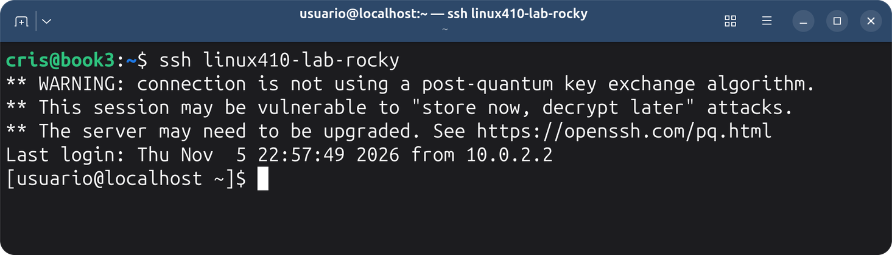
Con el alias en ~/.ssh/config y la clave cargada alcanza con ssh y el nombre del alias. No se escribe dirección, puerto, usuario ni contraseña.
Si después del destino va un comando, ssh lo ejecuta en el servidor, muestra la salida y vuelve. No queda una sesión abierta.
$ ssh rocky uptime
00:13:30 up 33 min, 1 user, load average: 0,00, 0,03, 0,06Sirve para consultar algo rápido, o para repetir lo mismo en varios servidores desde un script.
La salida del comando remoto llega a tu terminal, así que se puede guardar o filtrar en tu equipo:
$ ssh rocky df -h / > disco-rocky.txt
$ cat disco-rocky.txt
S.ficheros Tamaño Usados Disp Uso% Montado en
/dev/mapper/rl-root 19G 2,2G 17G 12% /> la hace tu shell: disco-rocky.txt queda en Debian.ssh rocky 'df -h / > disco.txt' deja el archivo en Rocky.ssh-agent es un programa que guarda en memoria las claves ya desbloqueadas.
ssh-add y se escribe la passphrase.Hoy solo lo nombramos, sin práctica.
Si se pierde la laptop o alguien copia la clave privada, esa clave sirve en todos los servidores donde esté la pública. Qué hacer:
authorized_keys la línea de esa clave. El comentario la identifica:sed -i '/ cristian@debian$/d' ~/.ssh/authorized_keysAccepted publickey ... SHA256:... muestra la huella usada.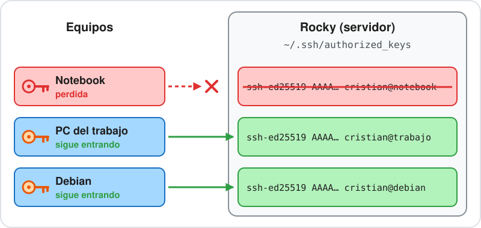
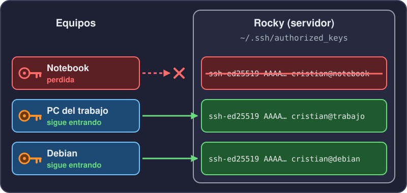
Cada equipo genera su propio par. Si se pierde uno, se quita una sola línea y los demás siguen entrando.
Hasta ahora usamos SSH para abrir una terminal en el servidor. El mismo protocolo sirve para copiar archivos de forma segura, cifrados de punta a punta.
ssh: el puerto 22, la misma clave o contraseña.Para eso hay dos comandos: scp, que copia como cp pero entre equipos, y sftp, que abre una sesión para explorar y mover archivos.
scp copia archivos por SSH, con la misma autenticación. Se escribe scp origen destino, y el lado remoto lleva host:ruta.
scp informe.txt rocky:/home/usuario/
scp rocky:desde-rocky.txt ./traido.txt
scp -r carpeta18 rocky:/home/usuario/-r copia carpetas.-P en mayúscula (scp -P 2223 ...). En ssh es -p.sftp abre una sesión para explorar el servidor y mover archivos.
$ sftp rocky
sftp> pwd
Remote working directory: /home/usuario
sftp> put subir.txt
sftp> ls -l subir.txt
-rw-r--r-- ? usuario usuario 15 Nov 3 19:10 subir.txt
sftp> get desde-rocky.txt bajado.txt
sftp> byeput sube y get baja. ls, cd y pwd actúan en el servidor.l adelante (lls, lcd, lpwd) actúan en tu equipo.bye cierra la sesión.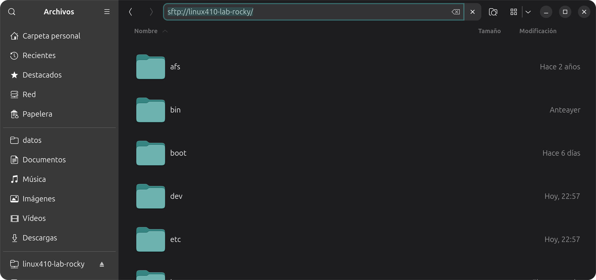
El explorador de archivos también habla SFTP. En la barra de direcciones se escribe sftp:// y el alias, y el servidor se recorre como una carpeta más: arrastrar un archivo es copiarlo.
En clientes Windows, es posible usar aplicaciones como WinSCP o FileZilla para gestionar archivos por SFTP, con la dirección, el puerto y el usuario cargados a mano.
Hardening es ajustar un servicio para que deje entrar solo lo necesario. En sshd, dos opciones hacen casi todo el trabajo:
PermitRootLogin no: root no entra por SSH. Se entra con un usuario común y se pasa a root con sudo.PasswordAuthentication no: solo entra quien tiene una clave autorizada.La contraseña se apaga después de comprobar que la clave entra.
sshd_config incluye, al principio, los .conf de /etc/ssh/sshd_config.d/. Los cambios van en un archivo nuevo ahí:
sudo tee /etc/ssh/sshd_config.d/10-curso.conf <<EOF
PermitRootLogin no
PasswordAuthentication no
EOF50-redhat.conf, que no toca estas opciones. En Debian el directorio está vacío.$ sudo sshd -t
$ sudo systemctl reload sshd
$ sudo sshd -T | grep -Ei "permitrootlogin|passwordauthentication"
permitrootlogin no
passwordauthentication nosshd -t revisa la sintaxis. Si está bien, no imprime nada.reload vuelve a leer la configuración sin cortar las sesiones abiertas. En Debian el servicio se llama ssh.Desde la anfitriona, que no tiene la clave. Antes del hardening, sshd pide la contraseña:
$ ssh -p 2223 usuario@localhost
usuario@localhost's password:Después, ni la pide:
$ ssh -p 2223 usuario@localhost
usuario@localhost: Permission denied (publickey,gssapi-keyex,gssapi-with-mic).Entre paréntesis están las formas de entrar que acepta el servidor: password ya no está. Desde Debian, con la clave, ssh rocky entra igual que antes.
Cambiar el puerto (Port) solo saca el ruido de los escaneos automáticos al 22. No reemplaza a la clave, y en Rocky además hay que habilitar el puerto nuevo en SELinux y en el firewall.
Podemos tener en Rocky un servidor web, nginx, escuchando en el puerto 80. Desde Debian no llegamos: el firewall de Rocky solo deja pasar el 22.
$ curl -sS -m 5 http://192.168.50.20/
curl: (7) Failed to connect to 192.168.50.20 port 80 after 1 ms: Could not connect to serverAl 22 sí llegamos, y SSH puede llevar otras conexiones dentro de la suya: eso se llama túnel.
Lo mismo pasa con un servicio que escucha solo en 127.0.0.1, como vimos en la clase 17: desde afuera no se ve, y por el túnel sí.
ssh -L abre un puerto en tu equipo y lleva lo que llega ahí, por dentro de la conexión SSH, hasta una dirección que el servidor sí ve.
ssh -N -L 8080:localhost:80 rockyEn otra terminal de Debian:
$ curl -s http://localhost:8080/ | grep -i '<title>'
<title>HTTP Server Test Page powered by: Rocky Linux</title>-L 8080:localhost:80: lo que llegue al 8080 de Debian sale desde Rocky hacia localhost:80.localhost se resuelve en el servidor, o sea en Rocky.-N no abre una shell; solo mantiene el túnel. Se corta con Ctrl+C.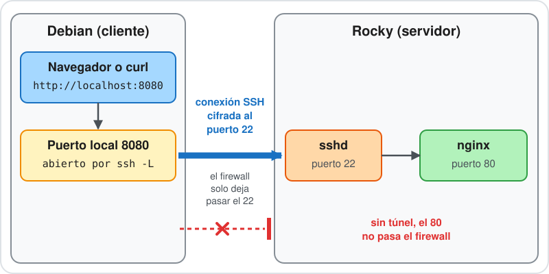
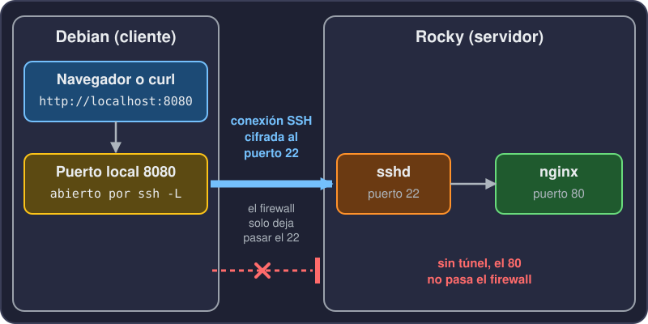
ssh -R hace lo contrario: abre un puerto en el servidor y lo trae hasta tu equipo. Sirve para que el servidor vea algo que corre en tu equipo.
En Debian hay una página de prueba en 127.0.0.1:8000:
python3 -m http.server 8000 --bind 127.0.0.1En otra terminal de Debian, el túnel:
ssh -N -R 8000:localhost:8000 rockyY en Rocky:
$ curl -s http://localhost:8000/
<h1>Hola desde mi equipo</h1>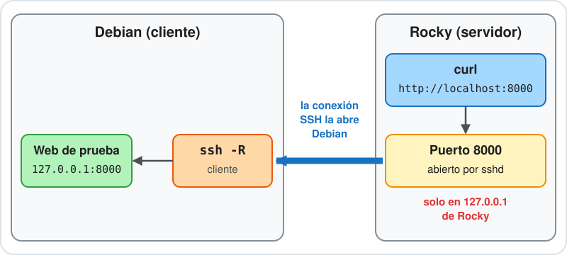
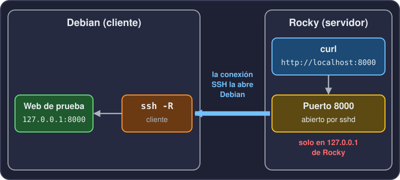
Cockpit es la consola de administración web de Rocky: servicios, almacenamiento, logs y una terminal, desde el navegador, en el puerto 9090.
En el laboratorio lo dejamos escuchando solo en 127.0.0.1 y entramos desde el navegador del anfitrión con un túnel ssh -L, como el de nginx.
ssh-keygen, ssh-copy-id y ~/.ssh/authorized_keys.authorized_keys.scp y sftp copian archivos por SSH.10-curso.conf, sshd -t, reload y una sesión abierta.ssh -L lleva un puerto de tu equipo hasta un servicio que el servidor ve y vos no. ssh -R hace el camino inverso.ping entre las VM.ssh-copy-id y entrar sin contraseña.~/.ssh/config para entrar con ssh rocky.scp y ejecutar un comando en Rocky sin abrir sesión.127.0.0.1 y entrar desde el navegador del anfitrión por un túnel ssh -L.man ssh, man sshd_config, man ssh_config, man ssh-keygen, man scp, man sftp.man cockpit-ws.